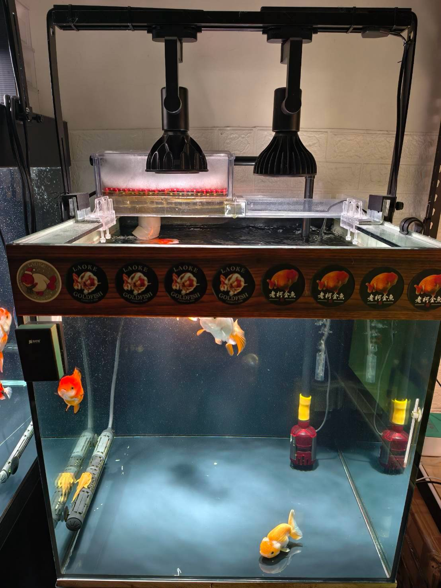

適合小水體、魚隻數量少、餵食量較小的二尺金魚缸。以換水為主、過濾為輔，用單層物理過濾搭配水妖精培菌，維持簡單而實用的系統。
🎥 配置影片

🐠 魚缸與過濾系統
- 魚缸：2／2／2。
- 滴流盒：水族先生兩尺抽屜式滴流盒。購買時附兩個便當盒，本配置只使用一層。
- 物理過濾：盒內使用羊毛絨，並放置排水板將棉墊高。
- 馬達：博特 TA2-1500，開第一段。
💡 燈具、打氣與加溫
- 燈具：倍力生 36W；6000K 兩顆或 4000K 兩顆，自行選擇。
- 打氣機：不斷電魚呼吸夜靜 015。
- 氣泡石：以水妖精代替，放置在沉水馬達右後方。
- 加溫棒：鐳力 500W，放置於過濾下水處。
水妖精除了能以氣舉帶動水流，也能提供培菌效果，因此不需另外放置氣泡石。
🧽 過濾系統與水妖精維護
- 羊毛絨髒污或堵水時就更換，最長不要超過 15 天。
- 水妖精每月取出清洗一次，用清水簡單沖洗、輕捏即可，不需要刻意洗得非常乾淨。
- 清洗水妖精不需禁食；若擔心魚隻受到影響，也可以禁食一天。
- 清洗水妖精當日，可順便清洗沉水馬達、滴流盒、管路等相關配件。
- 水妖精整組每年更換一次。
📌 配置原則
這套配置針對小水體、魚隻數量少且餵食量小的魚缸。由於污染源不高，以「換水為主、過濾為輔」，一層物理過濾搭配水妖精培菌，即可支撐整套系統。
如有疑問，可在群內詢問。
感謝 @嘿嘿 分享。
💧 沒事多換水，多換水沒事 💧